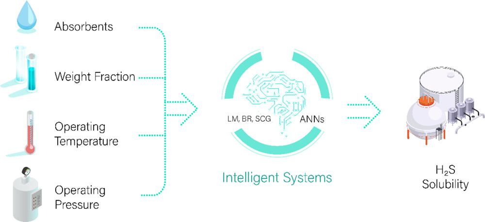

|
Radchaneeporn Changpun I'm a graduate student in computer science at department of computer engineering, Chulalongkorn University in Bangkok, Thailand.
CV / Github / Huggingface / Linkedin / Email |
{kind=link}
Research
I'm interested in data science, machine learning, and deep learning focused on Natural Language Processing(NLP). Area of my research is about Large Language Models. |
Projects |

|
Project Github I classify Scopus publications using encoder representation from transformers language model (RoBERTa), achieving a significant improvement of 40.3% in the Macro F1 Score (0.6687) compared to the baseline model (0.1894), demonstrating the effectiveness of transfer learning in enhancing text classification performance |
|
Project Github I developed a RAG technique to improve the hallucination of Llama2-13B using the vector database created from Scopus publications |

|
Project Github I conducted fine-tuning on Thai LLMs, specifically Typhoon 7B from SCB 10x, using the Thai wiki dataset V3 to explore improvements in the model for Q&A tasks |
Publications |
|

|
Prathana Nimmanterdwong, Radchaneeporn Changpun, Patipon Janthboon, el al. Link to Paper This publication is about applying a function in the MATLAB program and knowledge of Data Science to develop an artificial neural network model for predicting hydrogen sulfide solubility in natural gas purification processes. The model obtained a coefficient of determination (R2) of 0.9817 and a mean square error (MSE) of 0.0014. |
|
This website is adapted from the source code from jonbarron's website. |